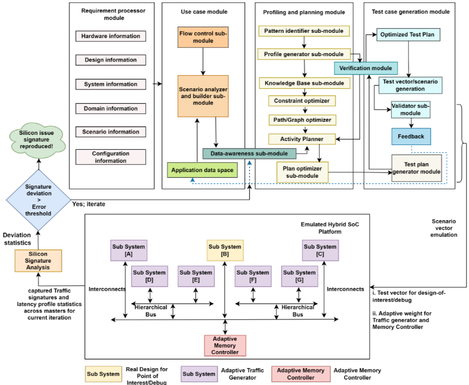
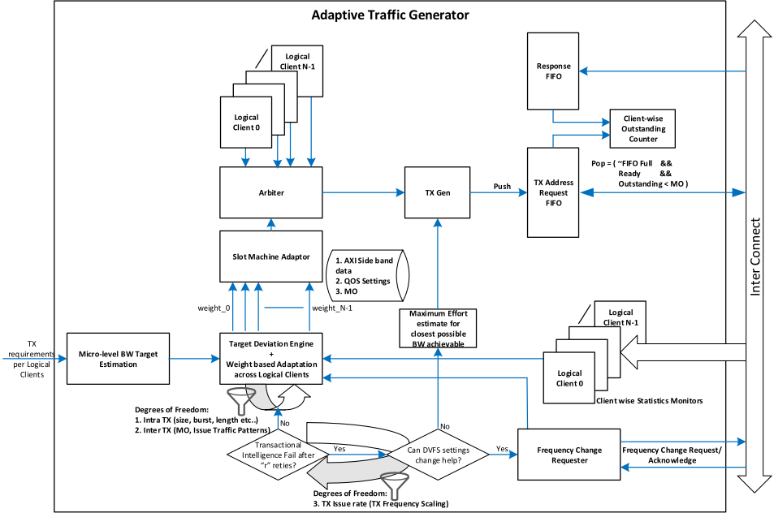
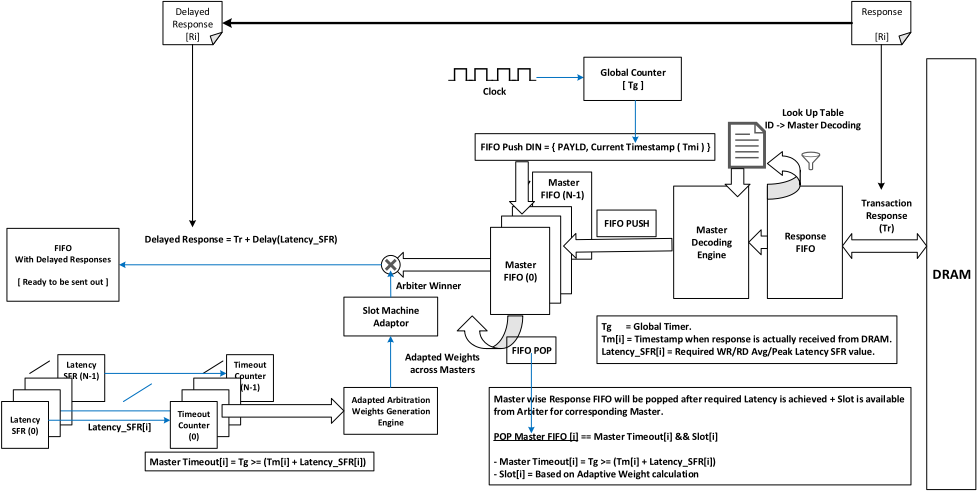
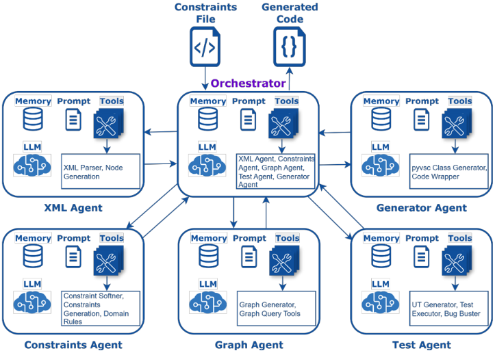
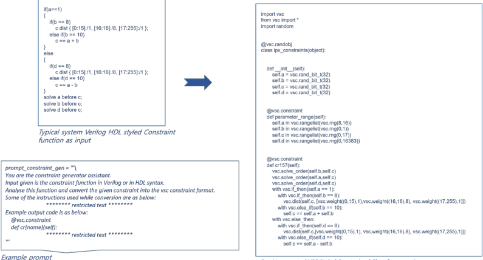
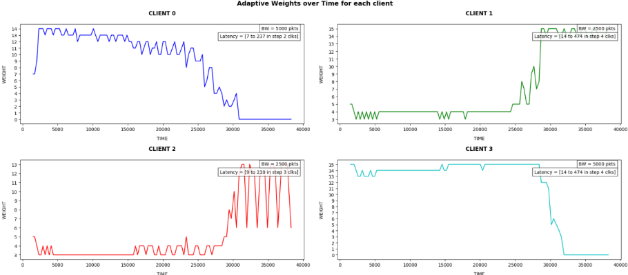
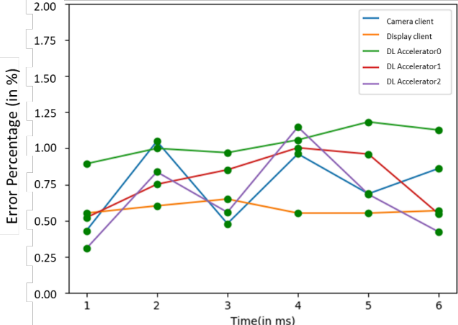

AI 驱动的自适应 Emulation 加速流片前调试：高保真 Silicon Replay
论文解决 silicon 性能 bug 在流片前难以复现的问题：传统 testbench 与 FPGA-based emulator 依赖非自适应 traffic generator 和固定延迟内存模型，无法匹配真实 SoC 的带宽与延迟行为，人工调优激励耗时数周甚至数月。方法上提出全可综合的 emulation 平台（实现于 Palladium）：待调试区域保留真实设计，其余 SoC IP 用可学习的 Adaptive Traffic Generator 替代，Memory Controller+DRAM 用 Adaptive Bus Modelling Engine 替代，可对 128+ 个 master 的读写平均/峰值延迟独立精确控制，并由 MCP 兼容的多智能体 Agentic AI 闭环驱动约束求解与激励在线迭代，直至复现指定 silicon failure signature。关键结论：corner-case 收敛加快 9x，波形生成加快约 50x，内存建模精度较 state-of-the-art 提升 >15%，复现迭代减少 >80%，延迟收敛误差 <1.25%。该工作展示了'全可综合自适应 testbench + AI 闭环'的 silicon replay 调试范式。
Silicon 性能 bug 在 pre-silicon 平台上极难复现：现有 traffic generator 对系统 adhoc 响应行为不自适应、难以达成带宽目标，各 master 的 Memory 访问延迟缺乏可控建模，导致 SoC 级 silicon 问题复现近乎不可能，且人工 stimulus 调优造成数周乃至数月的交付延迟。
提出全可综合的 Silicon Replay emulation 平台（实现于 Palladium）：SoC 中待调试区域（region of interest）保留真实设计，其余 IP 用 Adaptive Traffic Generator stub（可学习 arbiter 权重、按 silicon signature 带宽目标自适应调度的协议 master 模型）；Memory Controller+DRAM 用 Adaptive Bus Modelling Engine 替代，支持最多 128 个 master 的 WR/RD 延迟独立控制、平均+峰值延迟建模与自动调谐（零软件干预）；上层为 MCP 兼容的 Agentic AI 架构，由异构开源 LLM 池组成多个 agent（orchestration、parsing、约束转换、图与代码生成），经 MCP server 互联，自动收集系统信息、生成 VSC 风格约束类并闭环迭代，直到复现 silicon failure signature；初期以 Human-In-The-Loop（HITL）保证 prompt 有效性。
corner-case 收敛速度提升 9x
波形生成速度提升约 50x（testbench 主体含 Adaptive Traffic Generator 与 Adaptive Bus Modelling Engine 全可综合，host 与 emulator 间数据交换极少）
内存建模精度较 state-of-the-art 方案提升 >15%
silicon 问题复现迭代次数减少 >80%
Adaptive Bus Modelling Engine 延迟目标相对 silicon dumps 的收敛误差 <1.25%
约束求解对比实验设置：>5000 变量、>15000 约束、最多 20 层变量依赖，与 Cadence XCelium solver 对比（Table 2），正文未给出具体数值
相对已有工作的区别：(1) 已有 traffic generator 为协议合规、参数化可配置，但非运行时自适应（self-configurable），且多面向性能验证而非需要 per-master 独立延迟控制的异常行为调试；(2) 已有 LLM 验证框架（LLM4DV、ThreatLens、SV-LLM、AssertLLM）自动化验证任务，但缺乏上下文感知与专有 EDA 流程集成；本文将全可综合的自适应 Traffic Generator 与 Bus Modelling Engine 同 MCP 兼容 Agentic AI 闭环结合，直接以 silicon failure signature 为收敛目标做高保真回放，并在仿真器约束求解（Cadence XCelium）之外给出 AI 约束求解与全 emulation 平台的 KPI 对比。
相关度级别：high
命中能力域：2.6 仿真性能与加速器 | 2.4 设计验证方法学 | 2.7 EDA/验证自动化与 AI 辅助 | 2.1 IP 架构与微架构
理由：直接命中三个能力域：2.6（Palladium emulation、全可综合 testbench、波形生成加速、仿真 vs emulation KPI 对比）、2.4（silicon 性能 bug 复现/回放调试方法学、激励生成与迭代收敛）、2.7（MCP 兼容 Agentic AI、LLM 约束求解与代码生成、HITL 自动化）。同时 Adaptive Bus Modelling Engine 对 Memory Controller+DRAM 延迟行为（读写平均/峰值、per-master 独立、层级 NOC）的精确建模，与团队 LPDDR/HBM 内存 IP 和 UCIe 互连 IP 的 workload-driven 性能建模（2.1）相关：团队 IP 正是此类 SoC 级回放平台中被 stub/建模的对象，其延迟特征复现精度直接决定性能 bug 归因效率。
建议动作：深入精读并做内部分享
Sampathkumar M Ballary, Aruna Lohiya, Ramesh Patgar, Vandana S, Samruddhi C R, Priyadarshini Panemangalore
Pai, Vemuri Krishna Sumanth, Venkata Subba Rao Mane, Subrata Sarkar, Karthik Srinivasan 三星半导体印度研究院（Samsung Semiconductor India Research），班加罗尔，印度。
摘要 - 硅性能缺陷在流片前仿真中极难复现，这一点众所周知。从传统测试平台到现代基于FPGA的仿真器，现有平台均无法准确捕捉现代片上系统（System-On-Chip, SoC）设计内部复杂的交互。用于模拟知识产权核（IP）流量行为的流量生成器，无法自适应系统在满足带宽目标过程中的临时性（adhoc）响应行为。此外，由于缺乏对跨各主设备（master）的存储器访问延迟建模的控制，大多数SoC级别的硅问题复现在流片前平台上几乎无法实现。这还导致冗长的手动激励调优，造成数周甚至数月的延误。本文提出一种新颖的、完全可综合的仿真平台，以克服这些局限。该平台通过集成闭环人工智能（AI）编排系统与约束求解器，能够生成激励并在多次迭代中动态细化，直至在流片前平台上复现给定的硅失效特征。此外，该平台由基于自适应学习的流量生成器（Traffic generators）与总线建模引擎（Bus Modelling Engine，即经过建模的存储控制器，可对系统延迟行为进行精确控制）提供支撑。由此，该平台能够收敛于在硅上观察到的精确架构状态与时序特征，包括多个主设备的读/写延迟。我们的基准测试显示出显著改进：边界用例收敛速度提升9倍，波形生成速度提升约50倍——这是因为测试平台的大部分组成部分（包括对流量的流量行为进行建模的自适应流量生成器（Adaptive Traffic generators），以及对系统延迟行为进行建模的自适应总线建模引擎（Adaptive Bus Modelling Engine））均为完全可综合，从而确保主机（Host）与仿真器硬件之间的数据交换极少；同时，与业界最先进的解决方案相比，存储器建模精度提升超过15%。这项工作将复现迭代次数减少了80%以上，为实用且可扩展的硅问题调试方法树立了新的标杆。
片上系统（System-On-Chip, SoC）的演进带来了日益复杂的功能，给设计验证（Design Verification, DV）流程带来了巨大压力。挑战在于识别硅性能缺陷，而传统验证方法的局限性加剧了这一难题，这些方法包括静态测试平台（主要为基于单一或少量激励、旨在实现一致性仿真的测试平台）以及现场可编程门阵列（Field Programmable Gate Array, FPGA）仿真平台。这些方法依赖于简单的流量生成器（根据所定义的带宽随时间生成基于协议的流量，例如 AXI 流量）以及固定延迟的存储器模型，导致无法充分刻画先进 SoC 设计的复杂细节。这造成了保真度差距，延长了设计周期，导致需要多次硅片重新流片（re-spin），并造成不希望出现的产品上市时间延迟 [1]。人工智能（Artificial Intelligence, AI）的出现为智能化设计与验证开辟了新的途径，据报道其在解决自动化、覆盖率、可扩展性和适应性方面长期存在的问题上具有可观的前景。尤其是，能够自主运行的智能体人工智能（Agentic AI）已经兴起，它能够在最少人工监督的情况下促进各种 DV 目标的执行，并为复杂 IP 实现流程加速 [2-4]。然而，当处理分散在多个文档和格式中的不完整规范时，Agentic AI 系统面临挑战。大语言模型（Large Language Models, LLMs）可能难以像经验丰富的验证工程师那样深入理解硬件并发性、时序以及底层协议的复杂细节。此外，上下文感知能力不足、与专有电子设计自动化（Electronic Design Automation, EDA）流程的集成范围有限、缺乏项目级编排能力，以及难以获得用于根因定位的信号级追踪分析数据，都限制了 AI 系统的性能 [2]。为弥合这些差距，我们提出了一种采用多模态 Agentic AI、完全可综合且符合模型上下文协议（Model Context Protocol, MCP）的混合 SoC 验证系统，利用自适应流量生成和多主设备存储器控制实现接近实时的仿真。符合 MCP 规范确保了合成生成中的无缝互操作性与可扩展性，便于集成用于约束求解、场景生成、动态触发器合成和自适应细化的专用模型。
以下是所提方法针对的系统验证方面的待解决问题：
片上系统（SoC）验证已从定向测试演进为采用通用验证方法学（Universal Verification Methodology, UVM）的受约束随机流量。这一进展伴随着人工智能（Artificial Intelligence, AI）技术日益深入的融入。研究人员已报道了利用机器学习（Machine Learning, ML）来改进覆盖率导向的激励选择、学习型分支启发式方法以及阶段驱动的场景生成。此外，还开发了大语言模型（Large Language Model, LLM）驱动的框架，例如 LLM4DV [4]、ThreatLens [5]、SV-LLM [3] 和 AssertLLM [6]，用于自动化各类验证任务。这标志着从人工测试创建向智能化、协作式 AI 驱动验证流程的转变，并且这一流程还可扩展到为硬件 IP 生成测试向量与自适应输入，即使在非确定性系统中也能与特征签名收敛。
为了验证 SOC Backbone 的能力并确定经过优化的片上网络（NOC）架构，流量生成器（Traffic Generator）在 SOC 架构验证与性能验证领域发挥着关键作用，它通过向系统注入流量，帮助在流片前阶段对系统（总线 + 存储器骨干）施加压力。现有文献公开的是符合协议的 [9] 可配置流量生成 [8]（参数化、多模式生成），而非自配置且自适应的方案（即基于观测到的条件在运行时进行自主调整）。此外，这些工作的重点大多放在性能验证 [10] 和 [11] 上，而非调试 SoC 中的异常行为——后者需要对各主设备（Master）的响应延迟进行独立的精确控制。
图 1 所示的所提框架针对第[II]节中提及的问题陈述，该框架包含一个仿真硬件（HW）设计平台：整个 SoC 中，感兴趣区域/调试区域采用真实设计，而 SoC 的其余 IP 则以自适应流量生成器进行桩化（stub）。这使得能够复现来自硅片的流量特征。此外，用于生成该设计平台的基础设施是自动化的。

感兴趣/调试（Interest/Debug）：存储器控制器 + DRAM 系统被替换为可综合的自适应总线建模引擎（Adaptive Bus Modelling Engine），该引擎能够以高精度复现硅片的延迟特征（针对通过分层片上网络（NOC）交互的 128+ 个 SoC 主设备，读与写的平均/峰值延迟均可独立复现）。流量生成器与存储器控制器均为基于学习的 IP，其自适应权重由智能体 AI（Agentic AI）驱动，涉及迭代动态约束求解，并在用户定义的硅片特征复现最小误差阈值收敛时终止。
在该框架（图 1）的核心，存在多个互连的 AI 智能体，每个智能体在执行各类任务时承担不同的角色，这些任务包括收集系统信息与用例细节、剖析、规划，以及测试用例或场景生成的执行。约束取决于各种硬件、设计、领域和配置细节。为了生成具有最大覆盖率的约束，识别相关信息以在测试用例选择及其执行过程中增强路径感知十分重要。这项工作由剖析与规划模块完成，该模块借助高效的知识库（Knowledge Base）和优化器整合所有细节。最初，大语言模型（LLM）融合由领域专家进行验证，并逐步实现自动化。
流量生成器（Traffic Generator）是定制的 Verilog 模块，用于模拟符合特定协议（如 AXI）的主设备行为，以在总线/互连上自动产生读写事务流。它通过向系统中注入流量，帮助在流片前（pre-silicon）阶段对系统施加压力。它们还被用作流片后（post-silicon）调试的一部分，用于重现与性能和骨干架构相关的各种问题。
当前流量生成器存在的主要局限包括：
为解决上述问题，我们用自适应流量生成器（Adaptive Traffic Generator）取代了传统流量生成器。如图 2 所示，它是一个完全可综合的模块，可在两种模式下工作：

从硅片问题复现的角度来看，当前存储器控制器（Memory Controller）+ DRAM 所面临的技术问题可以归纳为两个主要方面：

图 3 所示的所提框架是一个可配置的全可综合存储器控制器，可针对每个主设备（master）独立控制延迟（整个 SoC 中最多支持 128 个独立主设备），且对写（WR）请求和读（RD）请求分别独立进行控制；同时具备自动调谐能力，可在动态系统行为下跨主设备调整延迟误差裕量，即“预期值”与“实际观测值”之间的偏差，而无需任何软件干预或外部调节代理；该框架能够在多种自由度上自我适应，例如通过调谐其仲裁调度机制来满足延迟要求。这使得所提出的模块能够实现对存储器控制器 + DRAM 的精确建模，在延迟方面对 WR 和 RD 访问均达到主设备级别的精确，包括在平均值之上额外叠加峰值延迟，从而在高度非确定性的系统中对 DRAM 的某些固有行为进行建模。
AI has been infused in the SOC verification platform using a MCP compliant Agentic AI architecture as shown in Fig. 4. This framework lets different AI models, tools and applications to share context safely and efficiently. Since the ownership of IPs and overall SOC lie with various individuals, we also used this framework to ensure structured and controlled interactions across IPs and components within the Agentic AI platform. Agentic AI can perceive, reason, plan, act and learn autonomously or almost autonomously using internal logic and external tools (like APIs, knowledge bases, or other agents). The information flow across various agents is described below:

Each of these agents have a set of LLMs pooled from heterogeneous open source foundation models [12], [13], [14] depending upon tasks, memory share and tools associated with the task allocated be it orchestration, parsing, constraint conversion, graph and code generation. They are interconnected via MCP servers which act like a bridge exposing required resources and functionalities diligently to complete the task assigned by the Orchestrator Agent such as querying databases or calling API for collecting system information, use case details, path intelligence, plan generation and feedback.

Example prompt GenAl generated VSC Styled Constrained Class for execution
The MCP server manages input and output schemas, processes prompt templates, and handles requests from clients, returning structured information (one of the example prompt and generated constraints class is captured in Fig. 5). It ensures communication management, often using techniques like chain-of-thought reasoning, such that the correct information is retrieved for the AI. Wherever modules include data diversity, until highly accurate AI performance is achieved, a supplementary approach using Human-In-The-Loop (HITL) is used to ensure prompt validity for maximum coverage and minimal error. Overall proposed architecture stitches use-case based modules with the help of the MCP server allowing all necessary and available information and workflows, powered by generation that is closer to real-world information.
以下是在硅片上观察到的真实系统失效，它们通过在 Palladium 仿真环境中实现的硅片回放平台得以复现：
以下示例展示了 Adaptive Traffic Generator 中的不同客户端如何由仲裁器使用根据概率历史生成的自适应权重进行调度，并自我学习以在未来的权重计算方面进行自适应调整，从而满足来自硅片特征（silicon signature）的带宽目标。
考虑一个如表 1 中所述的场景：
| Client Number | Number of transactions targeted (in packets) | Number of Clock cycles available to reach target (in clock cycles) | Latency seen for the responses for the sent transactions (in clock cycles) |
|---|---|---|---|
| 0 | 5000 | 40000 | random range(7, 237) |
| 1 | 2500 | 40000 | random range(14, 474) |
| 2 | 2500 | 40000 | random range(9, 239) |
| 3 | 5000 | 40000 | random range(14, 474) |
| Client Number | Number of transactions targeted (in packets) | Number of Clock cycles available to reach target (in clock cycles) | Latency seen for the responses for the sent transactions (in clock cycles) |
从随时间推移的学习角度来看，基于带宽与延迟特征，以表 1 为参考可以作出以下一些预期；图 6 展示了 Transaction generator 如何根据带宽目标以及临时性的系统响应，在各客户端之间调整仲裁优先级权重：

下面的图 7 展示了 Adaptive Bus Modelling Engine 中各不同 Master 如何由仲裁器使用根据历史（包括错误统计信息）生成的自适应权重进行调度的结果；该引擎通过自我学习在未来的权重计算方面进行自适应调整，从而满足延迟目标，相对于硅片转储（silicon dumps）以极小的误差裕量（<1.25%）收敛：

时间（单位：ms）
传统方法（使用 Cadence XCelium 求解器）与我们的方法在约束求解方面的对比分析总结记录于表 2 中。该比较基于求解一组给定的相同约束所花费的时间，所用用例包含 >5000 个变量、>15000 条约束，以及最多 20 层需要求解的变量间依赖关系。此外，仿真（使用 Cadence XCelium 仿真器）与我们的方法（Palladium 上的全硬件仿真平台）之间若干关键绩效指标（KPI）的对比分析总结记录于表 3 中。由于整个设计和测试平台部分均在硬件仿真（emulation）上运行，波形可用速度更快，从而减少了仿真时钟与硬件仿真时钟之间定期同步的需求。
| Solving type | EDA Solvers | Our approach |
|---|---|---|
| Single Camera IP Solving | 192 sec | 6 sec |
| Partial Camera Chain Solving [ISP Pre Processing 16MP] | 643 sec | 12 sec |
| Full Camera Chain [ISP + Display Processor Chain for Preview] | 981 sec | 13 sec |
| Solving type | EDA Solvers | Our approach |
| Key Performance Indicators | Traditional approach | Our approach | Comparative metrics |
|---|---|---|---|
| Iterations for silicon signature convergence [ISP + Display Processor Chain for Preview @ FHD 60] | ~34 | ~4 | ~9x faster convergence |
| Latency profile modelling accuracy [Display Processor Preview FHD @ 60fps] | 85% | 98% | >15% gain in accuracy |
| Time taken for debug-ready waveform availability [ISP + Display Processor Chain for Preview @ FHD 60] | 16-18 hours | 20-22 minutes | ~50x faster |
| Key Performance Indicators | Traditional approach | Our approach | Comparative metrics |
将具备架构感知能力的智能体 AI（Agentic AI）集成到片上系统（SoC）验证中，可加速高保真度的硅签名回放（Silicon signature replay）。基于我们的基准测试，我们提出的解决方案能够在上市时间（time-to-market）方面带来显著的商业优势，包括：边界用例（corner case）收敛速度提升 9 倍；波形生成速度提升约 50 倍——这是由于测试平台（testbench）的大部分组成部分，包括用于建模流量行为的自适应流量生成器（Adaptive Traffic generators）以及用于建模系统延迟行为的自适应总线建模引擎（Adaptive Bus Modelling Engine），都是完全可综合的，从而确保主机（Host）与仿真器硬件之间的数据交换极少；同时，与最先进的解决方案相比，存储器建模精度提升超过 15%。所提出平台中启用的选择性信息流，使其相比传统求解器能够更快地执行。此外，得益于嵌入在事务生成器（Transaction Generators）和总线建模引擎（Bus Modelling Engine）中的自适应机制，它还能将复现迭代次数减少 80% 以上，为实用且可扩展的硅问题调试方法树立了新的标杆。
为了扩展到其他领域，我们计划使其通用化，以适用于以辅助处理单元（XPU）为中心的设计，例如 AI 加速器、独立图形处理引擎和多核集群 CPU。此外，还将增加更多调试特性，以增强调试能力。